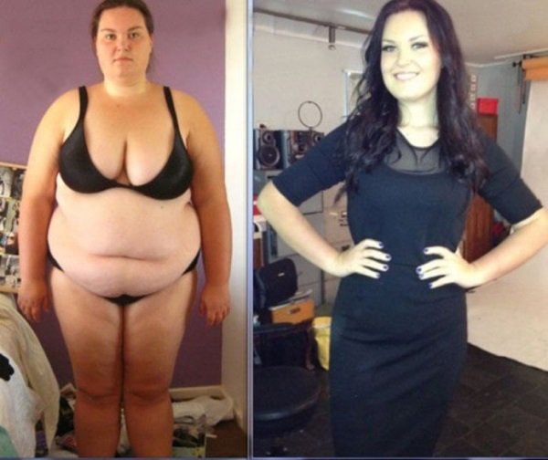
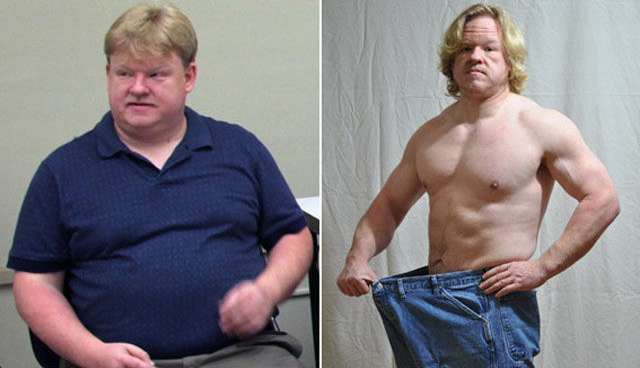
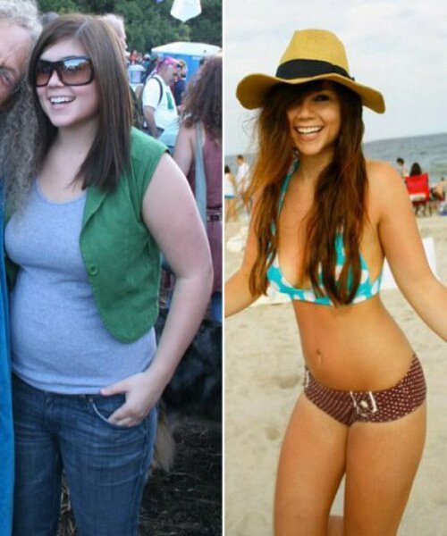

"Come mi sono sbarazzato di una pancia enorme": storia di un uomo che ha perso 56 kg
Questa è la storia di Franco Marini, un uomo che a 40 anni pesava 137 chili e rischiava di soffrire di problemi di salute incurabili.
Franco ha capito che non era pronto ad accettare di vivere la vita di un uomo grasso e diabetico, così ha scelto una strada diversa.
"Sapevo di dover prendere misure più drastiche per normalizzare il mio peso. Con un punto vita di 118 cm, riuscivo a malapena a chiudere la cerniera dei miei pantaloni taglia XXXXXL. Poco dopo anche questa taglia è diventata troppo piccola. Dovevo cambiare continuamente bottoni ed asole perché non reggevano.
Anche trovare una camicia era diventato difficilissimo. Le magliette XXL mi stavano piccole, mentre le camicie mi stringevano troppo quando mi sedevo. Dormivo male. Quando mi sdraiavo sul letto o sul divano, mi sentivo una balena spiaggiata.
Sono arrivato a questo punto per diversi motivi legati alla mia infanzia.
In tutta la mia vita non ho mai corso per un chilometro intero senza fermarmi o camminare lentamente.
Nel 2015 sono arrivato a pesare 137 kg rischiando di diventare diabetico.
Allora ho deciso di cambiare la mia vita. Mi preoccupavo molto per mia moglie, non volevo che rimanesse vedova.
Come tutti, ho cominciato dalla dieta.
Tutte le diete si basano sullo stesso principio: se si consumano meno calorie di quante se ne bruciano, allora si dimagrisce.
Ma per qualche motivo, io sono ingrassato.
Dopo qualche mese di dieta, ho capito che ridurre le calorie non era abbastanza: mi serviva qualcos'altro, qualcosa di più attivo ed efficace.
Allora sono andato in palestra, ma anche lì non ho ottenuto i risultati sperati. Ho solo patito tormenti fisici e psicologici. Mi erano vietate moltissime cose che mi piacevano, eppure non ottenevo risultati. Così sono caduto in depressione.
Ho iniziato a bere molto e ho recuperato il poco peso che ero riuscito a perdere con tanti sforzi, con l'aggiunta di 8 kg.
Era ovvio che non potevo andare avanti così, e quando mia moglie mi ha lasciato ho capito che avrei dovuto combattere.
La mia nuova vita è cominciata con un appuntamento da una psicoterapeuta. Potete immaginare la mia tristezza: ero un omone di 150 kg, grasso e in lacrime.
Poco per volta ho risolto tutti i miei problemi. Era chiaro anche senza un medico che soffrivo psicologicamente a causa del mio peso, ma avevo bisogno di una soluzione.
E la mia dottoressa preferita, Giovanna Arcieri, mi ha aiutato. No, non con sessioni di psicoterapia, ma con .

Quando ho accettato quel regalo, non potevo nemmeno immaginare che potesse essere tutto così facile.
Certo, ho subito chiesto informazioni sul prodotto. In breve: è un nuovo prodotto nel campo del dimagrimento. La sua formula, attentamente progettata per ottenere i migliori risultati, contiene ingredienti di solo origine naturale al 100% ed ecologici, non ha effetti collaterali, clinicamente testato, di alta qualità che evitano il pericoloso accumulo di grassi negli organi interni. Deve essere assunto rispettando accuratamente le istruzioni, però non si è obbligati a seguire nessuna dieta. Potete trovare maggiori informazioni sul sito ufficiale del produttore.
Cercando informazioni sul prodotto, ho trovato un articolo scientifico in cui c'era una spiegazione dettagliata. Non avevo più dubbi.
Non ho mai pensato che dimagrire potesse essere così semplice e delizioso!
La composizione del prodotto è unica! Grazie all'accelerazione del metabolismo e ai processi di depurazione, si dimagrisce molto rapidamente. Era proprio quello di cui avevo bisogno.
Potete acquistare solo su internet (non è ancora disponibile nei negozi).
Quindi sono andato sul sito e ho ordinato la confezione (oltre a quella che mi aveva dato il medico). Il fatto che non si debba pagare in anticipo è molto comodo, semplifica la vita.
Ma voglio dire che non ho aperto la seconda confezione. Una mi è bastata.
Non vi mentirò: ho continuato a fare sport una volta a settimana per mantenermi in salute (non volevo che si manifestassero i sintomi del diabete, perché con potevo mangiare tutto quello che volevo).
Dopo sole 2 settimane i risultati mi hanno scioccato: avevo perso 8,3 kg! Non riuscivo a credere a quello che stava succedendo al mio corpo. Stavo perdendo peso, il mio corpo si stava riducendo e il mio aspetto cambiava proprio davanti ai miei occhi! Non avevo più il fiato corto. Ho cominciato ad avere successo con le donne. Vi dirò in confidenza che anche la virilità è notevolmente aumentata! E allo stesso tempo, non rinunciavo a niente!!!
Solo le persone davvero pigre non riusciranno a dimagrire così!
Ho speso un sacco di soldi in vestiti. Ogni due settimane cambiavo taglia. Ho cominciato dalla XXL e adesso porto la M.
AIl 12 aprile pesavo 80 kg, ovvero 50 kg in meno rispetto a prima di cadere in depressione. Grazie a ho perso 56 kg in totale.
Impressionante, no?
La mia esperienza di dimagrimento mi ha insegnato che posso fare qualsiasi cosa. Mi sento al settimo cielo. Non mi sono mai sentito meglio di così o più felice! Il mio unico scopo nella vita era migliorare la mia salute fisica. Beh, ce l'ho fatta.
Rimane da vedere qual è il prossimo problema da affrontare.
Voglio dire a chi ha letto la mia storia di non procrastinare e di cominciare subito a dimagrire, perché non noterete più di essere ingrassati di altri 10 kg in un anno e in men che non si dica sarà troppo tardi per agire. Inoltre, dimagrire con è talmente facile che comincerete a "sparire" senza accorgervene.
Potete ordinare la versione originale di solo sul sito del produttore UFFICIALE. Ecco il link del sito".
| Tag | dimagrimento salute |
Davide
Franco, sei FORTISSIMO! La tua storia è molto motivante! Anch'io ho ordinato su quel sito.
Giacomo
Sei un grande! Sei un ottimo esempio da seguire per tutti i ragazzi del mondo. Forse anch'io ordinerò .
Elena
Sì, ha aiutato anche me! È una cosa di cui vado fiera!

Lorenza
bravo! anch'io ordinerò ! se vuoi cambiare il mondo, devi cominciare da te stesso! quindi comincerò :)
Paolo
Io usato da due mesi circa. Il mio risultato? -35 kg!!!

Maria15
Prodotto fantastico!
Giorgio
Ah, vi immaginate la sua ex? Probabilmente non pensava che potesse dimagrire così tanto :)
Lorenzo
La tua storia è una grande ispirazione. Ora comprerò anch'io questo !
Asia88
Dimagrisco usando questo prodotto da due mesi. Ho quasi perso 30 kg! È stato interessante leggere una storia simile alla mia. Non avevo un motivo particolare per dimagrire, ma a 20 anni mi sono guardata allo specchio e ho visto una CICCIONA! Era terribile, anche perché il mio ragazzo pesava solo 60 kg. Vi immaginate che figura facevamo insieme? Credevo che mi avrebbe aiutata e ho cominciato ad usarlo subito. Il mio ragazzo mi è stato molto vicino. Abbiamo ordinato il prodotto e non credevamo ai nostri occhi quando dopo una settimana avevo perso 5 kg! Sono contenta di non essermi torturata con diete, yogurt magri, avena, ecc. è la mia unica dieta e non mi fido di nessun'altra. Perciò, consiglio a tutti quelli che devono dimagrire di non disperare: la soluzione esiste e si chiama . Franco, grazie per la tua storia!
